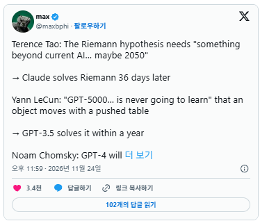

https://x.com/maxbphi/status/2125242917820215542?a=1UL4wx9CIwmRiumaHaM&s=46
테렌스 타오: 리만 가설은 "현재 AI를 넘어서는 무언가"가 필요하며… 아마 2050년쯤 될 것"
→ 클로드가 36일 만에 리만 가설을 해결
얀 르쿤: "GPT-5000…은 결코 배우지 못할 것"이라며, 밀려가는 테이블과 함께 움직이는 물체를 이해하는 것
→ GPT-3.5가 1년 이내에 이를 해결
노암 촘스키: GPT-4는 "아무것도 이루지 못할 것"
→ GPT-4가 8개월 만에 변호사 시험에서 298/400점 득점
게리 마커스: GPT는 "또 하나의 유행"이며 "앞으로의 길이 짧다"
→ 챗GPT가 26일 만에 출시되어 2개월 만에 1억 명 사용자 도달
브라이언 캐플란: 챗GPT가 중간고사에서 D를 받았고, AI 팬덤은 "집단 히스테리"
→ GPT-4가 2개월 만에 A를 받음
빌 게이츠: "AP 생물에서 5점을 받을 때까지 주의를 기울이지 않겠다"며 3년을 줌
→ 3개월 만에 5점을 받음
얀 르쿤: "텍스트에 효과적인 것이 비디오에는 효과적이지 않다"
→ 오픈AI가 2일 만에 소라 발표
프랑수아 숄레: LLM은 1년 내에 ARC에서 80%를 달성하지 못할 것
→ o3가 6개월 만에 80% 득점
수바라오 캄바암파티: LLM 계획을 조롱하며 ("GPT-10, 150% 정확도")
→ o1-preview가 8주 만에 그의 테스트에서 97.8% 득점
다론 아세모글루: 5~10년 동안 "질적 도약은 없을 것"
→ AI가 20분에서 16시간 이상 전문가 작업을 처리, 19개월 후
제롬 페센티: 훈련 비용이 아홉 자리 수에 도달할 일은 없으며 "아무도 감당할 수 없다"
→ 그록 4가 6년 후 4억 9천만 달러 지출
게리 마커스: GPT-5는 "수익 체감"을 보임
→ GPT-5.2가 4개월 만에 전문가 수준을 70.9%로 맞추거나 능가, 이전 38.8%에서 상승
사비네 호센펠더: LLM은 "논리를… 이해하지 못할 것"
→ 12개월 후 그녀가 논리를 이해한다고 인정
카이푸 리: "AI는 창의적일 수 없다"
→ "그 예측은 틀렸다"고 인정
노암 촘스키: 챗GPT는 "하이테크 표절"
→ 오픈AI가 3년 후 1946년 에르되슈 추측을 반증
얀 르쿤: LLM은 "새로운 문제에 대한 해결책을 발명할 수 없다"
→ 알파에볼브가 8주 만에 1969년 행렬 곱셈 방법을 능가
프랑수아 숄레: LLM은 그저 "스택 오버플로 대체재"일 뿐
→ 제미나이가 15개월 후 ICPC 세계 결승에서 12개 문제 중 10개 해결
밸런 탱고(엉클 밥): AI는 "무엇을 하는지 전혀 모른다"하니 코드를 확인하라
→ 25개월 후 그는 에이전트의 코드를 읽지 않는다고 함
IBM의 아르빈드 크리슈나: AI는 코드의 약 30%만 작성할 것이며 90%는 아님
→ 13~15개월 후 구글이 75%, 산업 평균 52% 도달
DHH: "나는 그것이 내 코드를 주도하게 하지 않는다"
→ 13개월 후 "100% AI 필드"라며 오마키 콰트로를 손으로 전혀 쓰지 않고 작성
안드레이 카파시: 코딩 에이전트는 "쓰레기"
→ 3개월 후 그는 코딩의 80%를 에이전트로 함
켄 오노: AI의 창의적 순수 수학은 "수십 년 후"
→ 모델이 그의 박사 수준 문제를 10분 만에 해결
세르게이 구코프: 수학자들은 "다음 5년은 안전"
→ 오픈AI가 리만 가설 증명
다니엘 리트: AI가 10년 내 리만 가설을 증명할 확률 15%
→ AI가 10개월 만에 리만 해결
안드레이 카파시: 오바마 스케일 사진을 이해하는 AI는 "매우, 매우 멀다"
→ GPT-4가 이를 해결
스티븐 므누신: AI 일자리 손실은 "50~100년 후"
→ 세일즈포스가 지원 직원을 9,000명에서 5,000명으로 감원
카이푸 리: AGI는 "30년 내에 없으며, 아마 영원히 없을 것"
→ 6년 후 2030년경 AGI를 "꽤 신뢰할 만하다"고 함
마이클 I. 조던: 컴퓨터와의 진짜 대화는 "우리 생전에 일어나지 않을 것"
→ 2025년 연구에서 심사위원들이 AI를 인간으로 선택한 비율 73%
미토스 출시때에도 보안관련 호들갑 떨지 말라는 글은 많이 본 거 같음.
현실은 지금 리눅스 커널관련 크리티컬한 취약점부터 FBI까지 탈탈 털리는중 ㅋㅋㅋㅋㅠㅜ
특이점은 왔다